Un sistema para emitir Documentos Tributarios Electrónicos (DTE) del régimen FEL de la SAT de Guatemala. Arma el XML, lo manda a certificar, guarda el número de autorización e imprime la factura con su código QR.
Es multi-empresa: una sola instalación atiende a varios contribuyentes. Cada uno entra con su usuario y ve únicamente su empresa, sus clientes y sus facturas.
El punto que hay que tener claro desde el principio:
SU SISTEMA CERTIFICADOR SAT
────────── ──────────── ───
1. Arma el XML ──────► 2. Firma con la llave del emisor
del DTE 3. Valida el contenido
4. CERTIFICA: asigna serie, número
y número de autorización (UUID) ──► 5. Registra
7. Guarda e imprime ◄── 6. Devuelve el XML certificado el DTE
el DTE certificado
Cuando alguien factura desde el portal gratuito de SAT, ese portal hace internamente lo mismo. Al pasar a sistema propio, se contrata un certificador comercial: se paga por documento y cuesta centavos.
| Requisito | Dónde se obtiene |
|---|---|
| Estar habilitado como emisor FEL | Agencia Virtual de SAT (lo hace el contribuyente o su contador) |
| Código de establecimiento | Lo asigna SAT al habilitar cada establecimiento |
| Contrato con un certificador | INFILE, Digifact, Guatefacturas, Megaprint, Certifika… |
| Credenciales de API | Se las entrega el certificador al contratar |
| Llave y alias de firma | También del certificador |
| RTU actualizado | Para copiar razón social y NIT exactamente |
En Guatemala el precio que se cobra al cliente ya incluye el IVA del 12 %. Por eso los precios se capturan tal como se venden y el sistema desglosa solo:
Total de la línea = cantidad × precio unitario − descuento Base gravable = Total ÷ 1.12 IVA = Total − Base gravable
Se hace una sola vez. Requiere PHP 8.0 o superior con las extensiones
dom, curl, pdo_mysql, mbstring y
openssl, y un certificado SSL activo en el dominio.
/home/suusuario/fel/, fuera de
public_html.public/. cPanel → Dominios → crear un
subdominio (por ejemplo facturacion.suempresa.gt) con raíz del documento en
/home/suusuario/fel/public.config/config.example.php a
config/config.php y complete dos secciones:// config/config.php
'db' => ['driver' => 'mysql', 'host' => 'localhost',
'nombre' => 'suusuario_fel', 'usuario' => 'suusuario_felapp',
'clave' => 'la-contraseña-del-paso-1'],
'app' => ['nombre' => 'Facturación FEL',
'clave_aplicacion' => 'PEGUE-AQUÍ-LA-CLAVE-GENERADA'],
La clave de aplicación se genera con:
php -r "echo bin2hex(random_bytes(32));"
cd ~/fel php bin/instalar.phpLe pedirá usuario, nombre y contraseña del administrador de la plataforma.
storage/ debe ser escribible:
chmod -R 770 ~/fel/storage. Compruebe con php tests/run.php./usr/local/bin/php /home/suusuario/fel/bin/reintentar_pendientes.php \
>> /home/suusuario/fel/storage/logs/cron.log 2>&1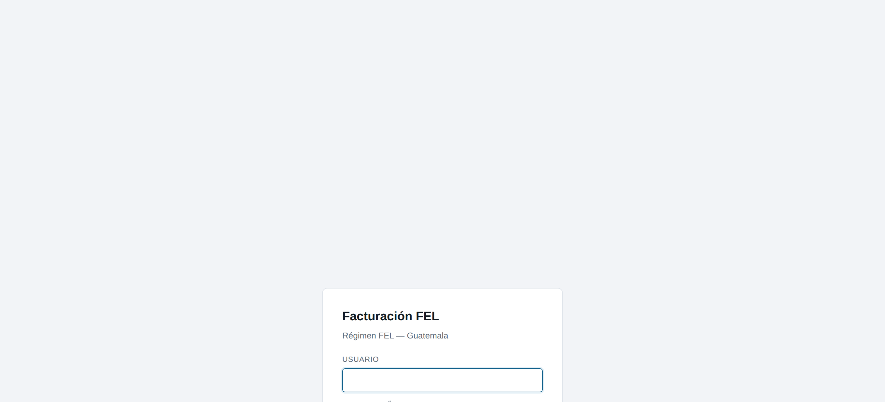
Al ingresar como administrador de la plataforma se abre directamente la lista de empresas. Desde aquí se dan de alta los clientes y se entra a trabajar en cada uno.
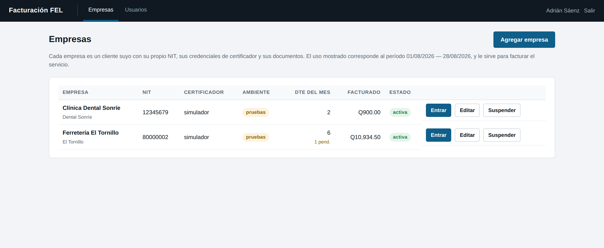
| Columna | Significa |
|---|---|
| Certificador | Con quién certifica esa empresa. simulador = pruebas, sin validez fiscal. |
| Ambiente | pruebas o producción. |
| DTE del mes | Documentos certificados en el período. Si hay pendientes, aparecen debajo en ámbar. |
| Facturado | Monto certificado del período. Sirve para facturar el servicio. |
| Estado | Una empresa suspendida no puede emitir. |
Empresas → Agregar empresa. Toma unos 15 minutos si ya tiene los datos del cliente.
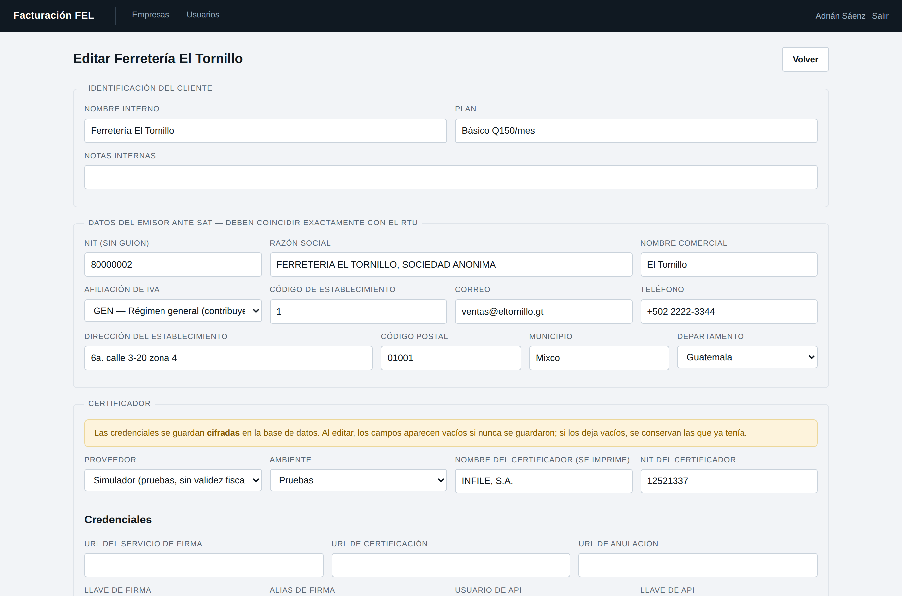
| Sección | Qué llenar |
|---|---|
| Identificación | Nombre interno (cómo identifica usted al cliente), plan contratado y notas. |
| Datos del emisor | NIT sin guion, razón social y nombre comercial idénticos al RTU, afiliación de IVA, código de establecimiento y dirección. |
| Certificador | Proveedor, ambiente, nombre y NIT del certificador (se imprimen en la factura) y las credenciales. |
| Operación e imagen | Formato de impresión, color de marca, logo, límite de consumidor final y aviso de plazo de anulación. |
| Primer usuario | Usuario y contraseña con los que entrará el cliente (mínimo 10 caracteres). |
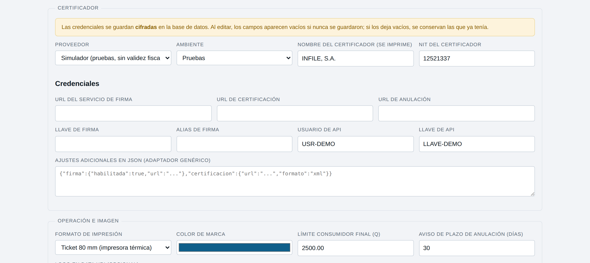
| Código | Régimen |
|---|---|
GEN | General (contribuyente normal, desglosa IVA) |
PEQ / PEE | Pequeño contribuyente / electrónico (no desglosa IVA) |
AGR / AGE | Contribuyente agropecuario / electrónico |
EXE | Exento de IVA |
El sistema ajusta solo el cálculo y las frases según lo que elija aquí. Confírmelo con el contador del cliente.
simulador: no gasta folios ni toca la red.Desde el listado de empresas, el botón Entrar abre el panel de esa empresa. El nombre de la empresa activa se ve siempre arriba a la derecha.
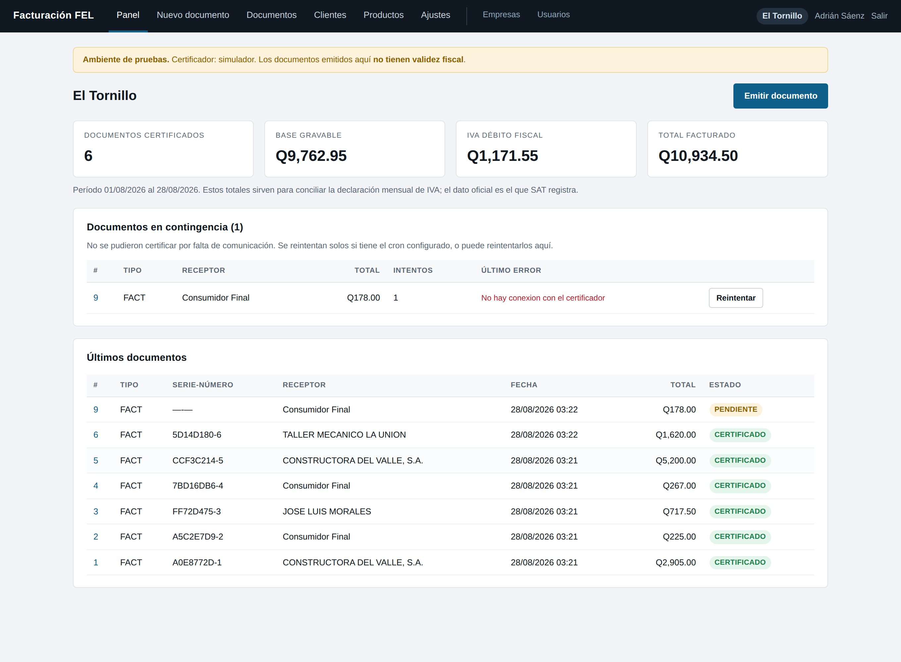
Corresponden al mes en curso y sirven para conciliar la declaración de IVA. El dato oficial siempre es el que SAT tiene registrado; estos son para cuadrar.
Mientras la empresa esté en pruebas o con el certificador simulado, aparece en todas las pantallas. Los documentos emitidos así no tienen validez fiscal y salen marcados como tal en la impresión. Desaparece al pasar a producción con un certificador real.
Si aparece esta sección, hay documentos que no se pudieron certificar. Se reintentan solos con el cron; el botón Reintentar los fuerza en el momento. Ver el capítulo 11.
Cargar estos dos catálogos es lo que hace que facturar tome segundos en vez de minutos.
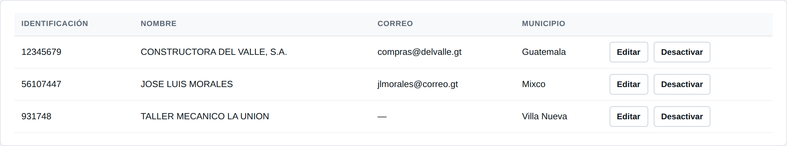
| Tipo | Cuándo usarlo |
|---|---|
| NIT (o CF) | Lo normal. CF para consumidor final. Se puede escribir con o sin guion. |
| CUI / DPI | Personas sin NIT. Se valida el dígito verificador de los 13 dígitos. |
| Extranjero | Pasaporte o identificación de otro país. |
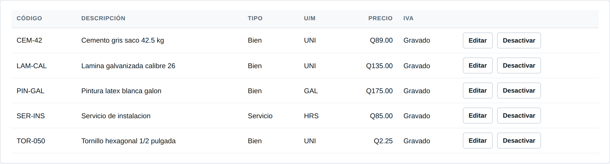
Clientes y productos se desactivan en lugar de borrarse, para no perder el historial de los documentos que ya los usaron.
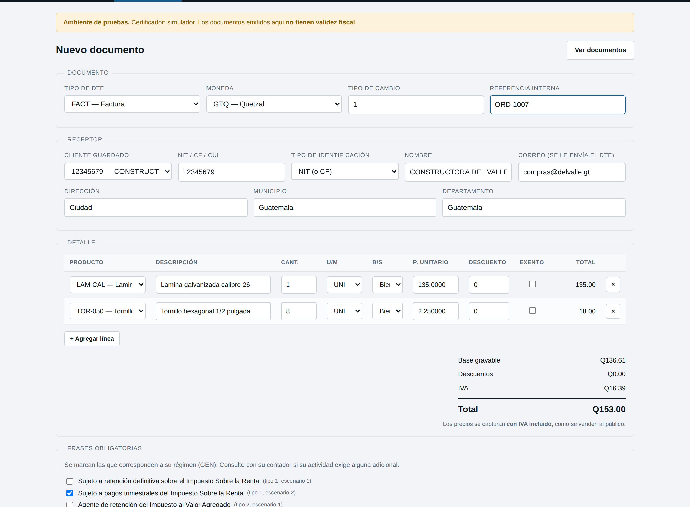
FACT para la factura normal. Los tipos de
pequeño contribuyente y agropecuario no desglosan IVA, y el sistema lo avisa en pantalla.CF. Si el dígito verificador del NIT está mal,
el sistema no deja emitir.| Código | Documento |
|---|---|
FACT | Factura |
FPEQ | Factura de pequeño contribuyente |
FCAM | Factura cambiaria (con abonos) |
NCRE | Nota de crédito (requiere referencia al documento origen) |
NDEB | Nota de débito (requiere referencia) |
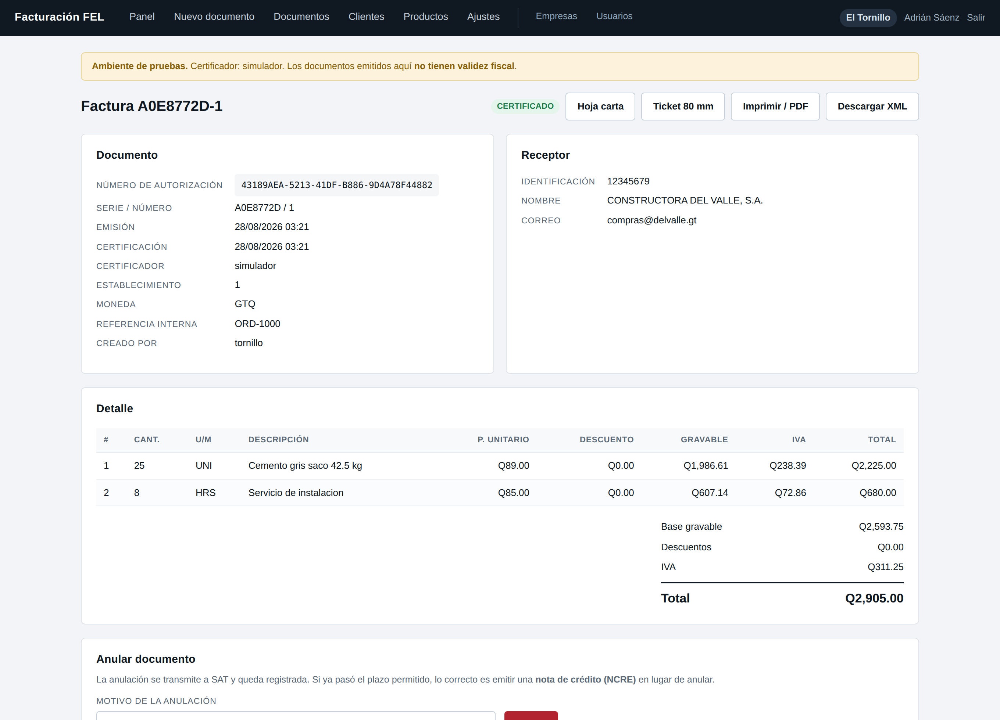
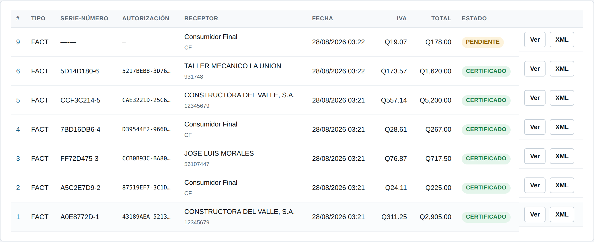
Desde el detalle del documento hay tres botones: Hoja carta, Ticket 80 mm e Imprimir / PDF. Para enviar la factura por correo o WhatsApp, use Imprimir y en Destino elija «Guardar como PDF».
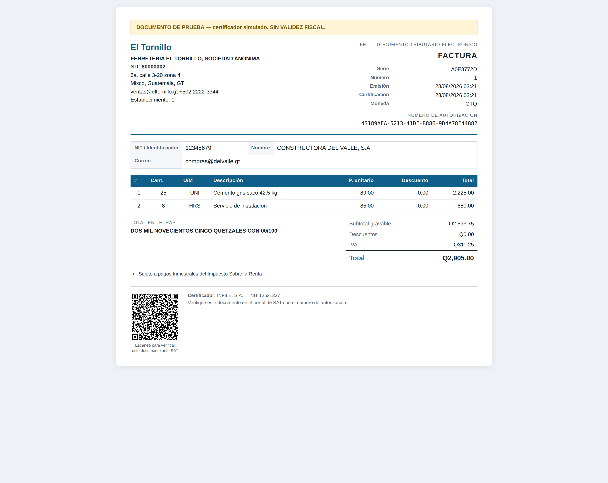
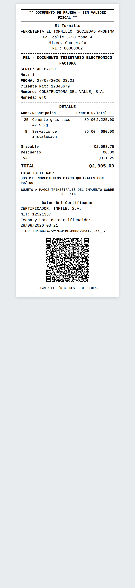
Los dos formatos llevan el código QR con el número de autorización: el cliente lo escanea con el celular y verifica el documento. Se genera dentro del sistema, sin depender de ningún servicio externo.
Ambos formatos lo incluyen: nombre y NIT del emisor, nombre comercial y dirección del establecimiento, tipo de documento, número de autorización con serie y número, fecha y hora de emisión y de certificación, identificación y nombre del receptor, detalle, moneda y total, las frases del régimen, y el nombre y NIT del certificador.
Son cosas distintas y se confunden seguido.
| Anulación | Nota de crédito | |
|---|---|---|
| Qué hace | Deja el DTE sin efecto | Ajusta un documento ya declarado |
| Cuándo | Dentro del plazo que permite la normativa | Cuando la anulación ya no procede, o si la devolución es parcial |
| Cómo | Botón Anular en el detalle | Nuevo documento tipo NCRE |
NCRE.Si se cae el internet o el certificador, no pasa nada: siga facturando.
El documento se guarda con estado PENDIENTE y su XML ya armado. Cuando vuelve la conexión, el cron lo certifica solo, reutilizando el mismo XML e identificador, de modo que el certificador lo trata como el mismo documento y no se duplican folios.
| Estado | Qué pasó | Qué hacer |
|---|---|---|
| PENDIENTE | Falló la comunicación | Nada: se reintenta solo. O Reintentar en el panel. |
| RECHAZADO | El certificador rechazó el contenido | Leer el error en el detalle, corregir y emitir uno nuevo. Reintentarlo solo repetiría el error. |
Revise el panel a diario. Si se acumulan pendientes en varias empresas, el problema es de red o del certificador; si es en una sola, probablemente son sus credenciales.
El cron se puede correr a mano para ver qué pasa:
php bin/reintentar_pendientes.php
Recorre todas las empresas activas con las credenciales de cada una. El detalle técnico
queda en storage/logs/.
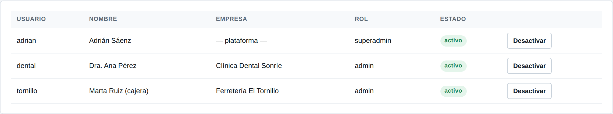
Cada persona que facture debe tener su propio usuario: el sistema registra quién emitió cada documento. Si el usuario ya existe, el formulario solo actualiza su contraseña (mínimo 10 caracteres).
| Rol | Qué puede hacer |
|---|---|
| Administrador de la plataforma | Ve todas las empresas, las da de alta, carga credenciales, crea usuarios y entra a trabajar en cualquiera. |
| Administrador de empresa | Solo su empresa: factura, gestiona clientes, productos y ve los ajustes. |
| Operador | Solo su empresa: factura y consulta. |
También desde la línea de comandos:
php bin/usuario.php crear vendedor1 "Juan Pérez" claveLarga123 operador 1 php bin/usuario.php clave vendedor1 otraClaveLarga456 php bin/usuario.php listar
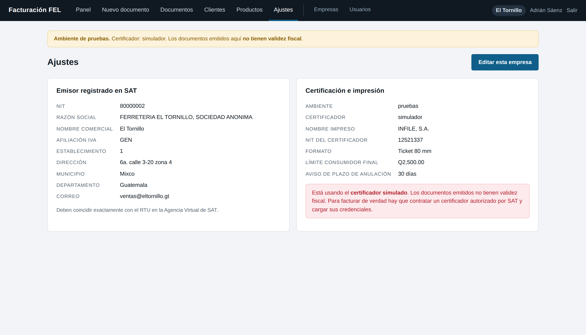
Es la pantalla donde el cliente confirma que sus datos ante SAT están bien. Si algo impide emitir documentos válidos, aparece arriba en rojo.
PENDIENTE y
RECHAZADO. Antes de declarar, esas dos listas deberían estar vacías.storage/xml/AAAA/MM/, o se
descargan uno por uno desde el listado.La pantalla Empresas muestra el consumo del período por cliente: documentos certificados y monto facturado. Eso es lo que necesita para emitirle su factura mensual.
Los DTE hay que conservarlos durante el plazo de prescripción. El sistema los guarda por
partida doble: en la base de datos y como archivo en storage/xml/.
| Cada cuándo | Qué |
|---|---|
| Mensual | Descargar el respaldo de la base (cPanel → Copias de seguridad) y guardarlo fuera del servidor. |
| Mensual | Comprimir y descargar storage/xml/. |
| Trimestral | Probar restaurar un respaldo. |
| Siempre | Tener a resguardo la clave_aplicacion. |
| Síntoma | Causa habitual |
|---|---|
| «No existe el archivo de configuración» | No copió config.example.php a config.php. |
| Error de conexión a la base | El usuario no está agregado a la base, o falta el prefijo de la cuenta cPanel. |
| Página en blanco | PHP menor a 8.0, o falta una extensión. |
| «No se pudo crear el directorio» | Permisos de storage/: póngalos en 770. |
| No se guardan los XML en disco | Lo mismo que el anterior. |
| El cron no corre | Ruta de PHP incorrecta. Revísela en Select PHP Version. |
| El certificador rechaza todo | Los datos del emisor no coinciden con el RTU. Revise carácter por carácter. |
| «Faltan las credenciales del certificador» | La empresa está en producción sin credenciales cargadas. |
| «No se pudo descifrar» | Cambió la clave_aplicacion. Restaure la original o recapture las credenciales. |
| El NIT no lo acepta | El dígito verificador está mal. Confírmelo en la constancia del RTU. |
| Errores de TLS al certificar | No desactive la verificación: pida al hosting que actualice los certificados raíz. |
storage/logs/fel-AAAA-MM.log.php bin/instalar.php # instalar (una vez) php bin/migrar_multiempresa.php # migrar desde la versión de un solo emisor php bin/usuario.php listar # ver usuarios php bin/emitir_ejemplo.php 1 # emitir un documento de prueba php bin/reintentar_pendientes.php # procesar contingencia (cron) php tests/run.php # verificar la instalación
En la carpeta docs/ del proyecto: cómo funciona FEL, instalación en cPanel,
conexión del certificador, lista de verificación de cumplimiento ante SAT, operación diaria y
guía para vender el servicio.